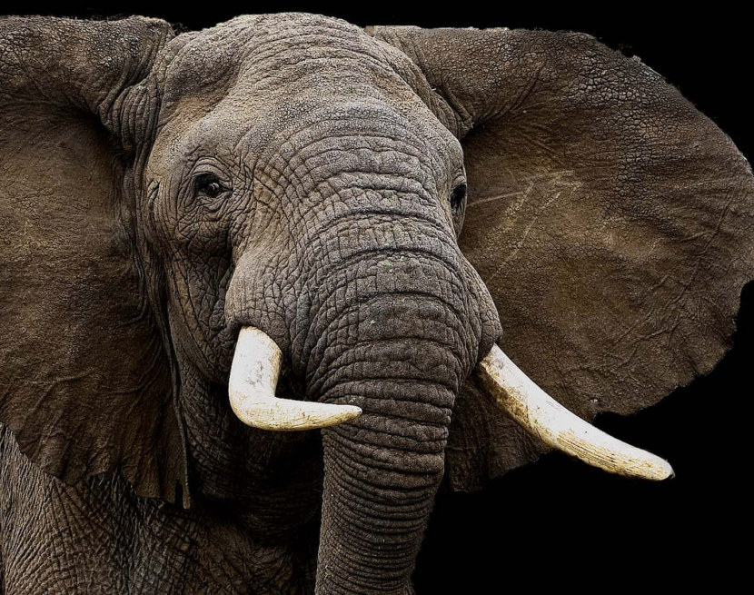
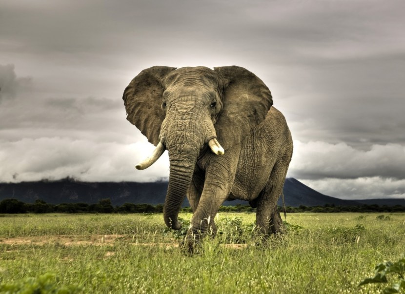

Слон уникальное животное.Его отличие от других млекопитающих на столько большое,
что ученные определили его в отдельный отряд - хоботные, в котором только 2 вида.

Сейчас в природе сохранились лишь два вида слонов: африканский и индийский.
У слонов очень массивное туловище, голова достаточно большая, толстые и мощные ноги.
Уши достигают внушительных размеров, а вот глаза, напротив, маленькие.